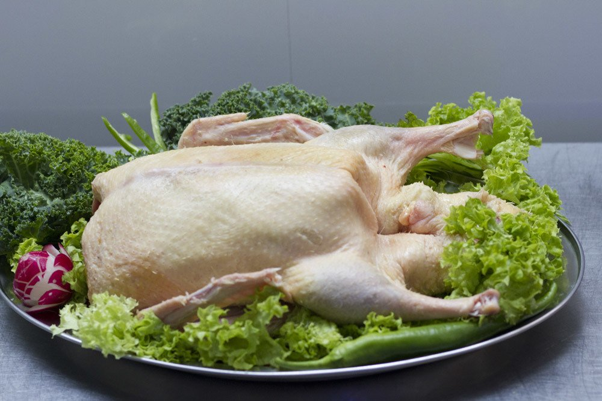

Kaczka –nazwa określająca niektóre gatunki z rodziny kaczkowatych, podrodziny kaczek, w szczególności z rodzajów Anas, Netta i Aythya. W Polsce zwyczajowo kaczki dzieli się na kaczki pływające (kaczki właściwe) i kaczki nurkujące (grążyce).
;Etymologia
Słowo kaczka na określenie dzikich kaczek pojawiło się w XIV wieku, a w XV wieku zaczęto tak określać również i kaczki domowe. Słowo to zastąpiło starosłowiański wyraz ąta, ątka (ros. utka, lit. antis, niem. ente, łac. anas)[1]. Zachodniosłowiańskie słowo kaczka, podobnie jak czeska ludowa káča/kačka i słowacka kačka/kačica, to wyraz pochodzenia dźwiękonaśladowczego. Słowo kaczor, określające samca kaczki, weszło w użycie w XV wieku[2].
Podział
W polskiej awifaunie kaczki tradycyjnie dzieli się na kaczki pływające (kaczki właściwe; Anatini) i kaczki nurkujące (grążyce; Aythyni). Do tej pierwszej grupy należą gatunki na przykład z rodzaju Anas, do drugiej między innymi Netta i Aythya[3]. Kaczki właściwe należą do plemienia Anatini, grążyce zaś do Aythyini. Trzecim plemieniem, w skład którego wchodzą kaczki, jest Mergini[4].
Anatini
Większość przedstawicieli plemienia Anatini to niewielkie ptaki o krótkich kończynach. Zamieszkują cały świat, łącznie z izolowanymi wyspami; do gatunków zamieszkujących takowe należą między innymi osiadłe krzyżówka białooka (Anas laysanensis) i cyraneczka auklandzka (Anas aucklandica). Do plemienia należą także gatunki wędrowne, jak rożeniec (Anas acuta), cyraneczka karolińska (Anas carolinensis) i świstun (Mareca penelope). Wiele małych przedstawicieli tego plemienia jest doskonałymi lotnikami. Niektóre z kaczek właściwych potrafią siadać na drzewach. U wielu gatunków samce są ubarwione jaskrawo, przeważnie z opalizującym lusterkiem na skrzydle, zaś samice i młode ubarwione maskująco. Po sezonie lęgowym samce przechodzą pierzenie i upierzone, są podobnie jak samice, głównie brązowo[4]. Kaczki właściwe pokarmu szukają w powierzchniowych warstwach wody. Odcedzają plankton i niewielkie fragmenty roślin, co umożliwiają im ulokowane w dziobie zachodzące na siebie blaszki rogowe[3]. Około ⅓ gatunków z tego plemienia gniazduje w dziuplach. Młode tych gatunków cechują się ostrymi pazurami i sztywnymi ogonami. Z wyjątkiem kilku tropikalnych gatunków, u których samiec pomaga strzec młodych, pisklętami zajmują się wyłącznie samice[4].
Aythyni
Kaczki nurkujące cechuje większa różnorodność w budowie ciała, zachowaniach lęgowych i sposobie żerowania[3]. Przeważnie są to ptaki słodkowodne, niektóre zimują na morskich wybrzeżach. Mają krótkie nogi ulokowane z tyłu ciała, przez co rzadko wychodzą na ląd. Aby poderwać się do lotu, muszą wziąć rozbieg. Występuje dymorfizm płciowy, jednak samce nie są zbyt barwne – w ich upierzeniu przeważają szarości, brązy i czernie. U grążyc nie występuje barwne lusterko, niekiedy w jego miejscu znajduje się białe lub białawe pasmo piór. Często na głowie i piersi występują opalizujące pióra. Zachowania tokowe nie są skomplikowane. Po rozpoczęciu wysiadywania samce porzucają samice, a w kolejnym sezonie znajdują nową partnerkę[4]. Grążyce pokarmu szukają w czystszej i głębszej wodzie. Sprawnie nurkują. W skład ich pokarmu wchodzą głównie wodne bezkręgowce, szczególnie wiosną i w okresie zimowym[3].
Mergini
Do tego plemienia prócz kaczek morskich należą również tracze, a w niektórych ujęciach systematycznych także i edredon (Somateria mollissima, kaczka edredonowa). U prawie wszystkich kaczek morskich występuje dymorfizm płciowy. Samce są przeważnie czarne lub czarno-białe, nierzadko z opalizującymi zielonymi lub niebieskimi głowami czy błękitnym albo zielonym zabarwieniem niektórych części ciała. Samice reagują na zaloty słabiej niż u kaczek pływających. W przypadku edredonów szczególną wartość ma puch, którym samica wyścieła gniazdo – dla wielu islandzkich farmerów stanowi on źródło dochodu[4].
Udomowione kaczki
Znaczenie dla człowieka Udomowione krzyżówki (Anas platyrhynchos) hodowane są przez ludzi głównie ze względu na mięso, rzadziej jaja. Krzyżówki zostały udomowione 2500 lat temu[5]. Najwcześniej kaczki udomowiono na Dalekim Wschodzie. W Polsce, ze względu na obfitość zwierzyny łownej, kaczki udomowiono w X wieku. Udomowione kaczki straciły zdolność latania, co zwiększyło ich masę i wartość konsumpcyjną[6]. Kaczki są również obiektem polowań[5]. W Polsce gatunkami łownymi są: krzyżówka (Anas platyrhynchos), cyraneczka (A. crecca), głowienka (Aythya ferina) i czernica (A. fuligula); wolno polować na nie od 15 sierpnia do 21 grudnia[7]. Mięso kaczek nie jest tak popularne jak mięso kur i gęsi[6]. W produkcji kaczego mięsa przodują Azjaci. W 2013 w Azji wyprodukowano 3660 tysięcy ton mięsa kaczego, na całym świecie 4367 tysięcy ton[8]. W Europie najwięcej mięsa kaczego produkowane jest we Francji i Niemczech[6].